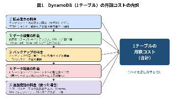
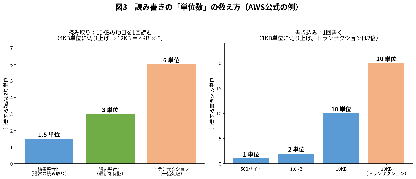
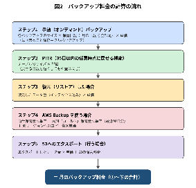

技術的な詳細・根拠・出典URLは別紙「Amazon DynamoDB 概要とコスト算出手法」を参照： 技術詳細版
1. 要約（1ページサマリー）
DynamoDB（AWSのサーバー管理不要なデータベース）の月額コストは、次の要素の「足し算」で決まります。サーバー台数の概念はなく、「読み書きの量」と「保管量」が中心です。
- ① 読み書きの料金：読み書きの回数（単位数）× 単価（オンデマンド方式）、または確保した処理能力 × 時間単価 × 時間（プロビジョンド方式）。
- ② データ保管の料金：保管データ量（テーブル＋検索用インデックス、GB）× 1GBあたりの月額単価。
- ③ バックアップの料金：手動バックアップの容量 ＋ PITR（過去35日以内の任意時点に戻せる機能）の対象サイズ ＋ 復元したデータ量、それぞれ × 単価。
- ④ データ転送の料金：別リージョンやインターネットへ送った量 × 単価（同じリージョン内のAWSサービス間は無料）。
- ⑤ 追加機能の料金（使った場合のみ）：複数リージョンへの自動複製、変更通知（Streams）、高速キャッシュ（DAX）、S3への書き出しなど。
バックアップ料金で最も重要な点：手動バックアップは毎回「まるごと」保存され、保管している全バックアップの合計サイズに課金されます（差分だけの保存ではありません）。また、PITRは「戻せる日数」を短くしても料金は下がらず、テーブルの大きさだけで決まります。

2. 月額コストの計算式（1テーブルあたり）
読み書きは「単位」で数えます。読み取りは4KBごと、書き込みは1KBごとに1単位（端数は切り上げ）。最新データを保証する読み取りは2倍、通常の読み取りはその半分、一括処理（トランザクション）はさらに2倍になります（図3）。

2-1. オンデマンド方式（使った分だけ払う・AWS推奨のデフォルト）
| ステップ | 計算式 | 数字の意味・入手先 |
|---|---|---|
| ステップ1 | 読み取り料金 ＝ 月の読み取り単位数 ÷ 100万 × 100万単位あたりの単価 | 単位数：監視ツール（CloudWatch）の読み取り消費量（ConsumedReadCapacityUnits）の月合計 |
| ステップ2 | 書き込み料金 ＝（テーブル＋インデックスの月の書き込み単位数）÷ 100万 × 100万単位あたりの単価 | CloudWatchの書き込み消費量（ConsumedWriteCapacityUnits）。インデックス分も合算 |
| ステップ3 | 保管料金 ＝ 保管量（GB）× 1GBあたりの月額単価 | 保管量：AWS管理画面／DescribeTable（TableSizeBytes）。※請求上は1項目ごとに100バイトの管理領域が加わる |
| ステップ4 | バックアップ料金 ＝ 3章の計算結果 | 3章を参照 |
| ステップ5 | 転送料金 ＋ 追加機能の料金 | 使わなければ0円。複数リージョン複製では、各リージョンで書き込み料金が発生 |
| 合計 | 月額コスト ＝ ステップ1 ＋ ステップ2 ＋ ステップ3 ＋ ステップ4 ＋ ステップ5 |
2-2. プロビジョンド方式（処理能力を事前に確保する）
| ステップ | 計算式 | 数字の意味・入手先 |
|---|---|---|
| ステップ1 | 読み書き料金 ＝（確保した読み取り容量（RCU）× 時間単価 ＋ 確保した書き込み容量（WCU）× 時間単価）× 月の時間数 | 「使った量」ではなく「確保した量」に課金。自動調整（Auto Scaling）利用時は時間ごとの設定値で計算（CloudWatchのProvisioned〜CapacityUnits） |
| ステップ2〜4 | 保管料金・バックアップ料金・転送／追加機能はオンデマンドと同じ | |
| 合計 | 月額コスト ＝ ステップ1 ＋ ステップ2〜4 |
※1年・3年の予約購入（リザーブド容量、100単位ごと）で割引されますが、使わなくても予約分は課金されます。
3. バックアップ料金の計算方法（詳細）
DynamoDBのバックアップには、手動（オンデマンド）バックアップ、PITR（継続バックアップ）、AWS Backupによる管理、S3へのエクスポートがあり、復元（リストア）にも料金がかかります。それぞれ次の手順で計算し、合計します。

| ステップ | 計算式 | 数字の意味・入手先 |
|---|---|---|
| ステップ1 | 手動バックアップ料金 ＝（各バックアップのサイズ × 保管日数 ÷ 月の日数 の合計）× 1GBあたり月額単価 | 毎回フルサイズで保存され、削除するまで課金。毎月1日に1か月分が計上され、月の途中で削除すると日割りで減額。サイズ：管理画面のバックアップ一覧（目安＝テーブルのサイズ × 保管数） |
| ステップ2 | PITR料金 ＝ テーブルのサイズ（GB）× 1GBあたり月額単価 | 戻せる日数（1〜35日）を短くしても料金は同じ。無効にするまで課金。サイズ：管理画面（テーブル＋同じキーのインデックス） |
| ステップ3 | 復元料金 ＝ 復元したデータ量（GB）× 1GBあたり単価 | 復元する場合のみ。検索用インデックス（GSI）も含めた量に課金 |
| ステップ4 | AWS Backup料金 ＝ 通常保管量 × 単価 ＋ コールド保管量 × 単価 ＋ コピー量 × 単価 | 使う場合のみ。AWS Backupの料金として請求。コールド保管は最低90日分の料金が発生 |
| ステップ5 | エクスポート料金 ＝ 書き出し量（GB）× 単価 ＋ S3料金 | 行う場合のみ |
| 合計 | 月のバックアップ料金 ＝ ステップ1 ＋ ステップ2 ＋ ステップ3 ＋ ステップ4 ＋ ステップ5 |
4. 計算例（説明用）
※説明用の仮の数値です。実際の単価は公式料金ページ（https://aws.amazon.com/dynamodb/pricing/）で確認してください。
前提（容量はAWS公式料金ページ・開発者ガイドの例）：プロビジョンド方式。1秒あたり80回の読み取り（3KBの項目・最新保証）→ 80RCU、1秒あたり100回の書き込み（512バイトの項目）→ 100WCU。テーブルサイズ29GB、PITR有効。手動バックアップは合計60GBを保管し、10日目に15GB分を削除（30日の月）。月末に29GBを1回復元。月730時間。単価はすべて仮です。
| ステップ | 計算 | 結果 |
|---|---|---|
| 読み取り料金 | 80RCU × 730時間 × 0.02円（仮） | 1,168円（仮） |
| 書き込み料金 | 100WCU × 730時間 × 0.1円（仮） | 7,300円（仮） |
| 保管料金 | 29GB × 40円（仮） | 1,160円（仮） |
| 手動バックアップ | （60GB － 15GB × 20日 ÷ 30日）＝ 50GB・月 × 15円（仮） | 750円（仮） |
| PITR | 29GB × 30円（仮） | 870円（仮） |
| 復元 | 29GB × 23円（仮） | 667円（仮） |
| 合計 | 1,168 ＋ 7,300 ＋ 1,160 ＋ 750 ＋ 870 ＋ 667 | 11,915円／月（仮） |
※バックアップ関連（手動バックアップ・PITR・復元）の小計は2,287円（仮）。復元しない月は667円（仮）が不要です。
5. 注意点
- 公式ページの記載が明確でない点があります：①PITRの課金サイズが月平均か時点値か（公式の例で27GB（平均）と29GBの両方の書き方がある）、②1項目ごとの管理領域（100バイト）がバックアップ・PITRのサイズに含まれるか、③AWS Backupで管理する場合の容量の数え方（DynamoDBの資料に記載なし）、④別リージョンにコピーした先での保管料金の扱い。
- バックアップはインデックス（GSI）を含みませんが、復元はインデックスを含めて課金されるため、復元料金は想定より大きくなることがあります。
- 手動バックアップは毎月1日に1か月分がまとめて計上されるため、請求画面では1日に山ができます（仕様です）。
- 見積もりは「多めに（保守的に）」行い、運用開始後に実際の請求額（Cost Explorer）と照合して補正することを推奨します。単価はリージョンや時期で変わるため、最終的な金額は必ず公式料金ページとAWS Pricing Calculatorで確認してください。
参考
- 別紙（技術詳細版）：「Amazon DynamoDB 概要とコスト算出手法」 技術詳細版
- Amazon DynamoDB 料金（公式）：https://aws.amazon.com/dynamodb/pricing/
- DynamoDB バックアップの課金（公式）：https://docs.aws.amazon.com/amazondynamodb/latest/developerguide/backup-restore-billing.html
- DynamoDB ポイントインタイムリカバリ（公式）：https://docs.aws.amazon.com/amazondynamodb/latest/developerguide/Point-in-time-recovery.html
- 読み書きの単位の数え方（公式）：https://docs.aws.amazon.com/amazondynamodb/latest/developerguide/read-write-operations.html
バックアップをAWS Backupで取得する場合の費用はこちら。